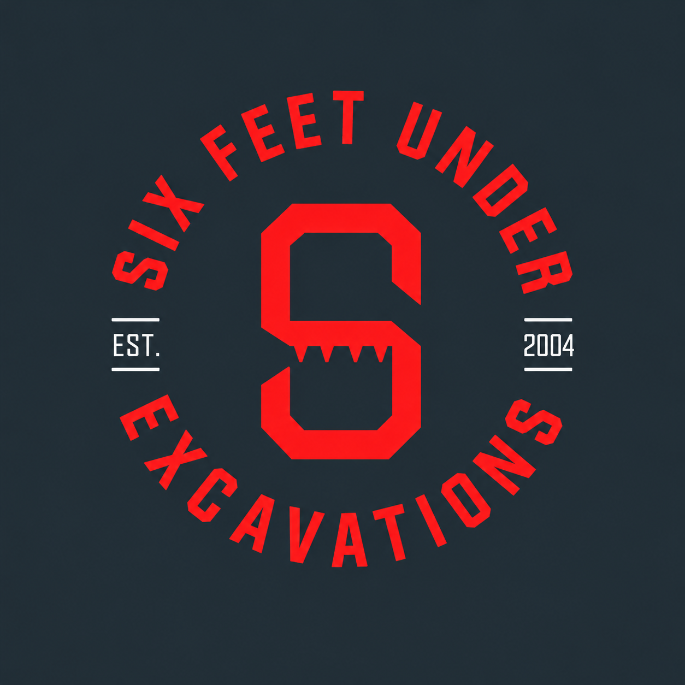

FAMILY OWNED. LOCALLY OPERATED.
GOOD WORK
STARTS AT
GROUND LEVEL.
Excavation backed by over 20 years of experience in construction and civil industries.
Talk to us about your project ↗SOUTH EAST QUEENSLANDSCROLL TO EXPLORE ↓
Local ground.
01 / THE WORK
For what comes next.
Start with solid ground.
From the first conversation to the work on site, bring practical construction and civil experience to your excavation project.

02 / THE PEOPLE BEHIND THE WORK
A family business.
A hands-on approach.
We are a family owned and operated business with over 20 years of experience in the construction and civil industries.
Six Feet Under Excavations services Northern NSW and South East Queensland. We bring that experience to the conversation about your site, your plans and the work ahead.
Let’s talk about your project ↗03 / OUR PATCH
Local roots.
Across the border.
Servicing excavation projects across Northern NSW and South East Queensland.
Discuss your site location ↗Queensland
New South Wales
04 / LET’S GET STARTED
GOT A PROJECT
IN THE GROUND?
Bring us your plans, site location and timeframe.
Let’s talk about the work ahead.
Call us to discuss your excavation project.